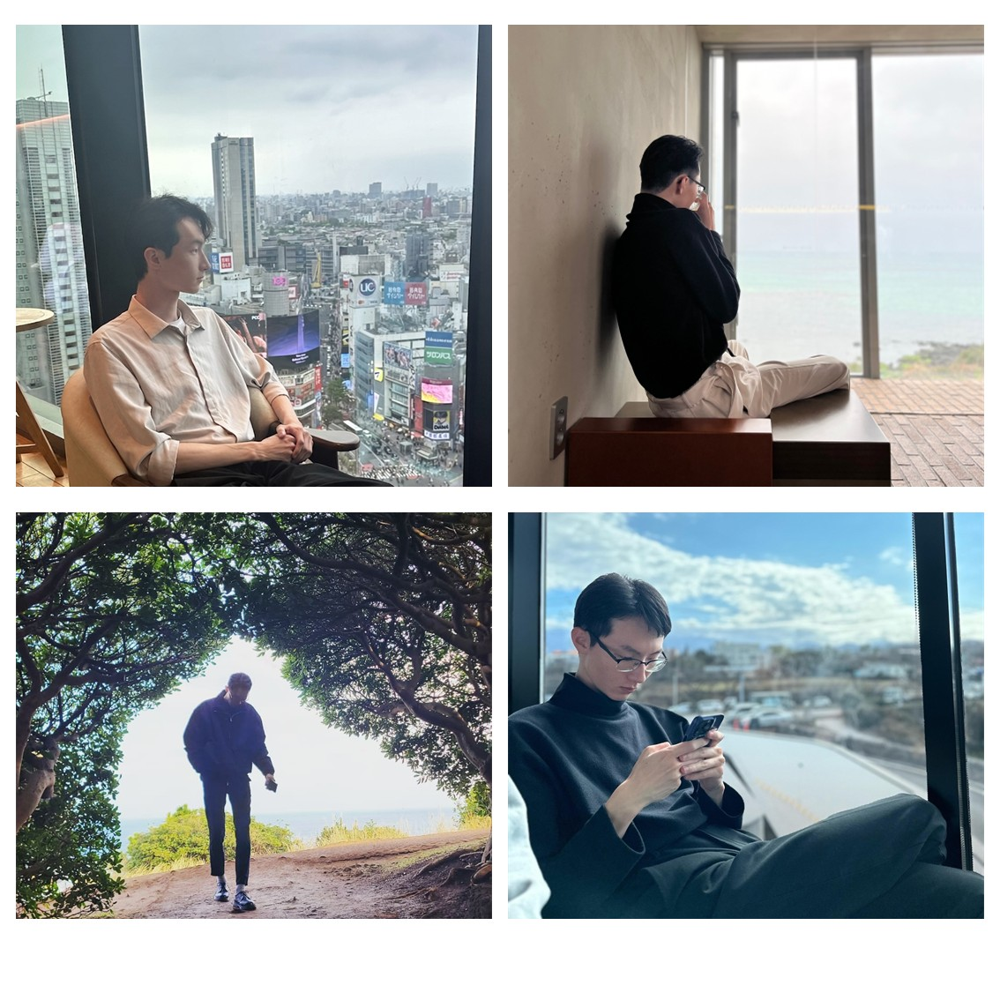

Exploring the language of RNA.
Engineering the future of translation.
I’m Kihyun Kim, a master's student in the Suzuki Laboratory at the University of Tokyo. My interests lie at the intersection of RNA biochemistry, tRNA engineering, and synthetic biology.

Research at the interface of biology and engineering.
tRNA Engineering
Designing artificial tRNA systems to control aminoacylation and translation.
RNA BIOCHEMISTRY 02Translational Regulation
Exploring mechanisms that govern decoding and the function of engineered translation systems.
MOLECULAR ENGINEERING 03Synthetic Biology
Connecting sequence design, high-throughput experiments, and quantitative biological readouts.
SYSTEMS & DESIGN“I’m interested in understanding how RNA works—and in using that knowledge to design new biological capabilities.”
Background & experience ↗